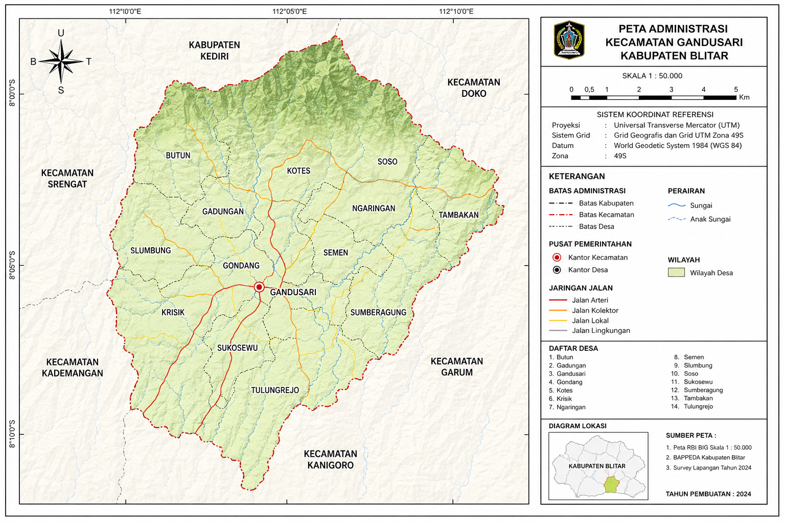

Kabupaten Blitar
Informasi mengenai profil, visi, dan misi Kecamatan Gandusari.
Kecamatan Gandusari merupakan salah satu kecamatan di Kabupaten Blitar...
Seiring waktu, Gandusari berkembang dengan memanfaatkan potensi...
Lokasi Kecamatan Gandusari melalui Google Maps.
Peta administrasi yang menampilkan desa dan batas wilayah Kecamatan Gandusari.
